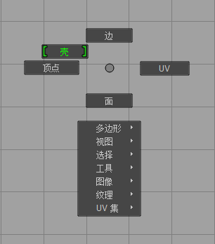

选择 UV、UV 组件和 UV 壳对于在 UV 编辑器中编辑 UV 的布局是很关键的。可以在场景视图或 UV 编辑器中选择 UV，但只能使用 UV 编辑器查看和编辑 UV 的 2D 表示。
注： 可以使用软选择来平滑地变换模型上的纹理，而不必一次一个地变换每个 UV。软选择是通过围绕选定区域变换衰减区域来进行的。请参见软选择组件。
在场景中选择 UV
- 在场景中的网格上单击鼠标右键，然后选择“UV”，或者在“UV 工具包”(UV Toolkit)中启用“UV 选择遮罩”(UV selection mask) (
 )。
)。
曲面网格的 UV 显示在与顶点完全相同的位置，这样可以在场景视图中选择它们。
- 可通过单击多个 UV 或拖动框选来选择多个 UV。
在场景视图中会选定 UV。若要查看 UV 的 2D 表示，必须打开 UV 编辑器（“UV > UV 编辑器”(UV > UV Editor)）。
- 按 Ctrl 键并单击鼠标右键，然后选择“扩大选择”(Grow Selection)或“收缩选择”(Shrink Selection)以展开或收拢当前 UV 选择。
在 UV 编辑器中选择 UV 和 UV 壳组件
- 在“UV 编辑器”(UV Editor)的 2D 视图中单击鼠标右键，并从标记菜单中选择组件模式。
提示： 在 UV 编辑器中按住 F 键可框选 2D 视图中的任意选定项目。
- 选择 2D 视图中的组件。
您还可以通过“UV 工具包”(UV Toolkit)的“按类型选择”(Select By Type)部分中的按钮，快速选择共享特定质量的所有 UV（例如，使用特定缠绕顺序或与 UV 壳的其他部分重叠的 UV）。 有关所有这些选项的详细信息，请参见 UV 编辑器概述。